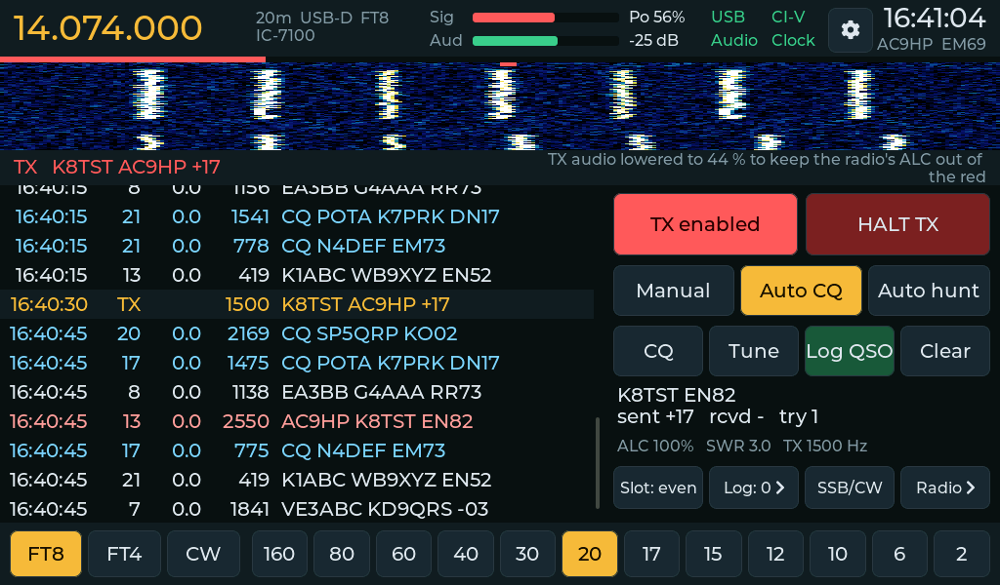
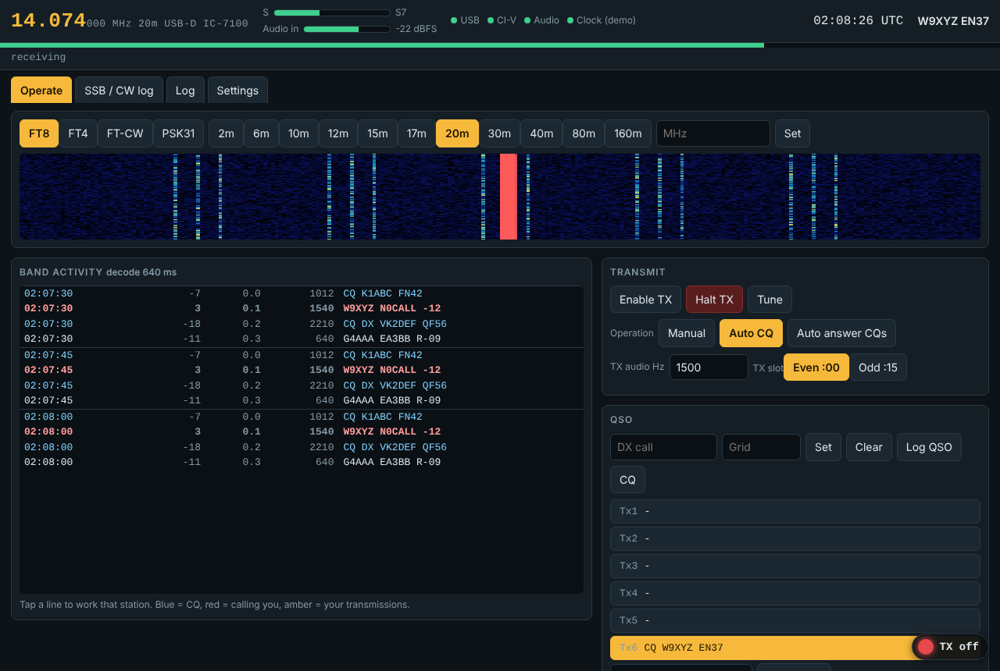
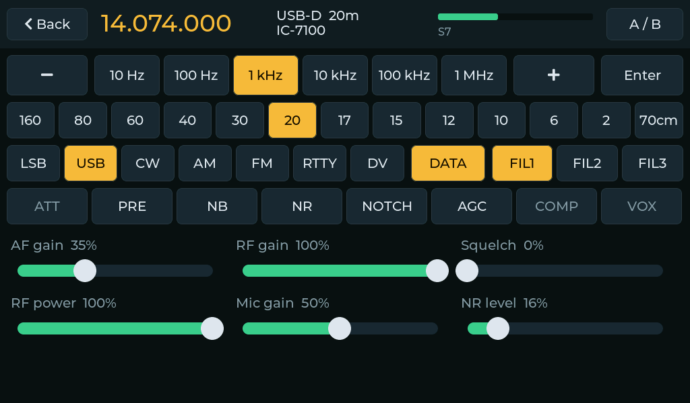

RigDeck User Guide
Set up RigDeck, connect your radio, and make and log FT8 contacts from the touch screen or any browser.
Getting started
RigDeck is firmware for the Waveshare ESP32-P4-WIFI6-Touch-LCD-7B, a 7-inch touch board. Plug it into your radio's USB port and it decodes, transmits and logs FT8 and FT4 by itself or under your control. It also makes its own Wi-Fi hotspot, so a phone or laptop can run everything from a web page.
What you need
- The Waveshare board and a 5 V supply (a 2–3 A USB charger gives the most headroom).
- A USB cable from the board's USB-A port to your radio.
- Optional: a microSD card (FAT32) for a much bigger log and the console log.
- Optional: a GPS module for exact time with no internet (see Keeping the time).
Install RigDeck
- Open the flasher page in Chrome or Edge on a computer.
- Connect the board's USB-C port to the computer with a data cable. The USB-A port is for the radio.
- Choose Stable (tested, recommended) or Beta (newest features), press Install RigDeck and pick the board's serial port.
- When updating, leave Erase device unticked: that keeps your log and settings.
First start
- On a phone or laptop, join the Wi-Fi network RigDeck (or RigDeck-XXXXXX). The password is
ft8ft8ft8. - Open http://192.168.4.1. You can also do everything below on the touch screen: the gear button at the top right opens Settings.
- Settings, Station: enter your callsign and grid. RigDeck will not transmit until both are set. Optionally give the unit a RigDeck name BETA such as "Shack" or "Mobile": it shows at the top right of the web page and in the names of downloaded files.
- Settings, Wi-Fi: change the hotspot password. To give RigDeck internet time and reach a logging PC, enter your home network (2.4 GHz) and press Save + connect.
- Press Save. Hotspot changes take effect after Restart; the home network is joined right away.
Connecting your radio
Plug the radio in and leave Settings, Radio on Find automatically: RigDeck tries each serial port as Icom, Yaesu, Kenwood / Elecraft and QMX, and uses the first that answers. That can take up to a minute; choosing the radio's family makes it quicker. You can swap radios without changing settings.
| Radio / interface | How it connects | Status |
|---|---|---|
| Icom IC-7100, IC-705 | one USB cable | tested on the air |
| QRP Labs QMX / QMX+ | one USB cable | tested on the air |
| SignaLink USB with any radio (tested with a K2) | Radio "No CAT"; the SignaLink keys the radio | tested on the air |
| Yaesu FTX-1 | one USB cable | untested |
| IC-7300, IC-7610, IC-9700, IC-905 | one USB cable | untested |
| FTDX10, FT-991A, FT-710, FTDX101 | one USB cable | untested |
| TS-2000, TS-480, TS-590, K2, K3 | Digirig with the radio's CAT cable, or a CP2102 or CH340 USB-RS232 cable plus a sound card on a powered hub | untested |
| FX-4CR BETA 1.1.0 | one USB cable; set the radio's CAT to TS-590S, 115200 | untested |
| Elecraft KX2, KX3 | Digirig with the Elecraft CAT cable | untested |
"Untested" means checked against simulated radios only. Reports from real radios are welcome on GitHub.
IC-7100
- SET > Connectors: DATA MOD: USB. Without it the radio transmits silence.
- USB MOD Level around 20 %, USB AF Level around 50 %; if your radio has ACC/USB Output Select, set it to AF.
- CI-V address 88h, baud 19200 or Auto. USB SEND / keying OFF (RigDeck keys with a CI-V command).
- For now, set the TX audio level by hand on the IC-7100; automatic level is not confirmed on it yet (see Automatic TX level).
IC-705
- SET > Connectors > MOD Input > DATA MOD: USB; USB AF/IF Output > Output Select AF. Leave USB SEND/Keying OFF and the CI-V address at A4h.
- Stop the 705 charging from RigDeck's USB port, or the board's 5 V sags and the screen dims: SET > Function > Charging (Power ON): OFF and USB Power Input: OFF. Run the radio from its battery or a DC supply.
- Its GPS can set RigDeck's clock: SET > Connectors > USB (B) Function > GPS Out: DATA → USB (B), then Settings, Clock, Clock from radio's GPS: On.
QMX / QMX+
- One USB cable carries CAT and 24-bit audio. RigDeck uses the QMX's DIGI mode and keys it over CAT.
- The QMX has no ALC and no CAT commands for power, gains or filters, so those controls on the radio screen do nothing. Frequency, band, mode, A/B and keyer speed work.
No CAT: SignaLink or another sound card
- Settings, Radio: No CAT. PTT is VOX (the SignaLink keys on the audio) unless you choose RTS or DTR.
- A sound card cannot tell RigDeck the band or frequency, so you tell it: press the FT8 band button for the band the radio is on, or tap the frequency and enter it (web page: type e.g.
7.030 CWor14.250 USB). That frequency goes into the log and is remembered across restarts. - Want CAT as well? The board has one USB-A port: use a powered USB hub with the sound card and a CP210x or CH340 USB-serial cable (CH340 from 1.1.0). FTDI and Prolific cables are not supported yet. The board's USB-C port cannot be used for a radio.
The screens

- Header: frequency, band and mode, radio model, signal and audio meters, link lights (USB, Audio, CI-V, Clock), UTC time, your call and grid, and the gear button for Settings.
- Waterfall: tap to set your transmit audio frequency (red marker).
- Band activity: every decode. Blue = CQ, red = calling you, amber = your transmissions. Tap a line to work that station.
- Right side: TX enabled / HALT TX, Manual / Auto CQ / Auto hunt, CQ, Tune, Log QSO, Clear, the contact in progress, the TX slot (even/odd), Log: N (logbook), SSB/CW and Radio.
- Bottom row: FT8, FT4, CW (FT-CW) and the band buttons.
The web page has the same controls in four tabs: Operate, SSB / CW log, Log and Settings. Use it from the hotspot or your home network.

Clock and levels
Clock
FT8 needs UTC within about a second. The Clock light shows the source in use. With your home network RigDeck uses internet time; on the hotspot alone it copies the clock of the phone or laptop showing the page. If most stations show the same DT offset, use the trim buttons in Settings, Clock (−0.1 s, −20 ms, +20 ms, +0.1 s). More in Keeping the time.
Receive level
The Audio in meter should sit roughly between −30 and −10 dBFS on band noise. Adjust the radio's USB AF level.
Transmit level
- Set the radio's power the way you want it (for example 5 W on the IC-705).
- Press Tune (a 10-second carrier, into a dummy load or a clear frequency).
- Raise Settings, Operating, TX audio level % or the radio's USB MOD level until power stops rising, then back off until ALC stays near zero.
- Leave Lower audio when ALC shows on and RigDeck keeps ALC out of the red from then on.
Making FT8 contacts
Pick FT8 or FT4 and a band. Decodes appear at the end of each slot (15 s for FT8, 7.5 s for FT4).
| Mode | What RigDeck does |
|---|---|
| Manual | Tap a decode to call that station; this enables TX. The sequence then runs by itself and TX switches off after 73. On the web page, Tx1–Tx6 choose the next message. |
| Auto CQ | Press Enable TX. It calls CQ, works whoever answers, logs the contact and calls CQ again. |
| Auto hunt | It answers plain CQs from stations not yet worked on this band, works them, logs and looks for the next. CQ POTA, CQ WWFF and (from 1.0.1) CQ SOTA are answered once per UTC day, band and mode; other directed CQs (CQ DX, CQ NA ...) are left to you. |
- HALT TX unkeys at once, in every mode.
- TX slot chooses even (:00/:30) or odd (:15/:45) for your CQs. It is remembered over a restart.
- Log QSO logs the contact in progress now, for when the other station fades out. It needs at least one signal report, sent or received.
- Call CQ as (Settings, Station): plain CQ, CQ DX, CQ POTA, CQ SOTA, CQ WWFF, CQ NA, CQ EU or CQ TEST.
- POTA mode: confirm each QSO (Settings, Operating): after each contact in Auto CQ or Auto hunt, RigDeck waits until you press Next QSO.
- A station that does not answer after the set number of repeats (default 5) is skipped for 10 minutes.
Choosing stations BETA
Settings, Operating, Choosing stations.
Do-not-work list
Calls listed here are never called or answered, in any mode. If one answers your CQ it is ignored and RigDeck keeps calling. Their decodes are greyed out on the web page, and tapping one shows a message instead of calling.
W1ABCalso covers W1ABC/P and VE3/W1ABC.XX9*covers every call that starts with XX9.- Separate calls with commas or spaces.
Answer priority
Off by default: RigDeck takes the strongest signal, as before. Turn it on and, when several stations call you (Auto CQ) or call CQ (Auto hunt), RigDeck applies your rules in order. The first rule that tells two stations apart decides; on a tie the next rule decides, and after the last rule the first one heard.
| Rule | A station counts when |
|---|---|
| POTA / WWFF | it calls CQ POTA or CQ WWFF |
| SOTA | it calls CQ SOTA |
| DX | the grid in its message is farther than "DX means farther than, km" (default 2,500 km) from your grid |
| Special event | it has a 1×1 call such as W9A |
| Weakest / Strongest | by signal report |
On the web page, tick the rules you want and move them with the ▲ ▼ buttons. The touch screen turns priority on and off; the order is set on the web page.
Transmit safeguards
TX watchdog and the traffic light
The watchdog (Settings, Operating, default 6 minutes, 0 = off) turns transmit off when no operator has been present for that long. A touch on the screen, a click or a command counts as present, and so does the web page while it is open and in view. A hidden tab, minimised window or locked phone lets the watchdog count down.
The light floats at the bottom right of the web page. All three lamps flash when the page loses its connection to the board.
Dead man's switch
Settings, Wi-Fi, off by default; for remote operation. RigDeck checks every 20 seconds that the internet answers. After about a minute without it, RigDeck starts no new contact, finishes the one in progress and turns TX off in Auto CQ and Auto hunt. Enable TX again yourself once the internet is back.
Automatic TX level
With Lower audio when ALC shows on, RigDeck reads the ALC meter while transmitting and turns its audio down a step after each transmission that went into the ALC zone, and back up when there is room, never above your maximum. It works with the Icoms and the FTX-1; it is confirmed on the IC-705. The manual level is remembered per radio, so moving a unit from a SignaLink to an IC-705 brings back each radio's own level.
Other limits
- Transmit is forced off if a transmission overruns its slot or the USB link to the radio drops.
- A contact attempt is dropped after the set number of unanswered repeats.
Logging
Every contact goes into two ADIF files named after the station callsign:
- Current log (
AC9HP_log.adi): download it into your logging program, then Clear current log; the next download holds only new contacts. - Archive (
AC9HP_archive.adi): every contact, untouched by clearing.
Changing the callsign in Settings switches to that callsign's files; changing it back brings the old log back. The operator callsign (ADIF OPERATOR) does not change the files.
Where the log lives
The board's own memory holds roughly 2,500 contacts. With a FAT32 microSD card in at start-up the logs move onto the card, in the RigDeck folder, with room for hundreds of thousands. Put the card in or take it out with the power off. Settings, Device shows the free space and offers Format microSD card for new cards (most 64 GB and larger cards come as exFAT, which RigDeck cannot read).
Downloads
Web page, Log tab: Download current log and Download full archive. With a RigDeck name set BETA, files are named NAME-CALLSIGN-YYYYMMDD-HHMM-current.adi.
Editing contacts
- Web page, Log tab: find a call, press Edit, change or add any ADIF field, Save changes or Delete contact.
- Touch screen, Log: N: tap a contact to edit or delete it.
- A deleted contact can be restored from "Recently deleted" (web) or Undo delete (touch). It is kept for 7 days in the board's memory, for good on a microSD card.
Sending contacts to your logging program
- Settings, Logging, Send log to: UDP, WSJT-X format (port 2237) for programs that listen for WSJT-X, such as Log4OM, GridTracker and JTAlert; or UDP / TCP with a bare ADIF record.
- In Log4OM, add a UDP inbound connection of type JT_MESSAGE on that port.
- The logging PC must be on the hotspot or on the network RigDeck joined.
- Send unsent (Log tab, touch logbook) sends every contact the logger has not received yet, for example after operating in the field. Send test to logger checks the connection without logging anything.
SSB / CW logger
The SSB/CW button on the touch screen, or the SSB / CW log tab, logs contacts made by hand. Opening it turns automatic FT8 transmit off.
- The frequency follows the radio until you type one; SSB / CW choose the logged mode until the contact is logged.
- Type the call, reports, name and a note, and press LOG. Empty reports are logged as 59 or 599. A call already worked on this band is flagged in red.
- Six CW macro buttons send through the radio's keyer (radio in CW). Edit them in Settings as
Label|text;{CALL},{RST},{MYCALL},{GRID}and{REF}are filled in.
Radio control screen

Radio on the main screen opens a front panel: tuning steps from 10 Hz to 1 MHz, a keypad (Enter), bands from 160 m to 70 cm, modes and DATA, filters, ATT, preamp, noise blanker and reduction, notch, AGC, compressor, VOX, and sliders for AF and RF gain, squelch, power, mic gain and NR level. Values are read back from the radio, so the screen follows its knobs. Controls the radio does not report stay grey.
FT-CW and PSK31
- FT-CW (CW on the touch screen) is RigDeck's own mode: FT8-style contacts sent as machine-timed Morse. It needs two RigDecks, both at the same speed (Settings, FT-CW speed, default 40 wpm). It needs signals about 15 dB stronger than FT8. Contacts are logged as CW.
- PSK31 (web page): click a signal on the waterfall, read the text, type and send, and log with the form.
APRS BETA
On the web page, press APRS next to FT8 and FT4. RigDeck sets the radio to FM with DATA on the APRS frequency (Settings, APRS; 144.390 MHz by default, 144.800 in Europe) and decodes 1200-baud packets from the radio's audio. The touch screen shows that APRS is run from the web page.
- Stations heard: callsign, type (car, house, digipeater ...), distance and direction from you, when last heard, comment and the digipeaters it came through. Plain, compressed and Mic-E positions are read. Tap a station to write it a message.
- Messages: type the call-SSID and the text (up to 67 characters) and press Send. A message goes out up to 3 times, 30 seconds apart, until the other station acknowledges it (✓ received). Messages to you are shown, and acknowledged while the radio is connected.
- Beacons: your position goes out while TX is enabled, every "Beacon interval" minutes (default 10; the TX watchdog applies as for FT8), and at once with Send position now. RigDeck waits for a clear channel before it transmits.
- Your position: a fixed latitude and longitude from Settings if given, else a GPS (module on the board, or the radio's GPS sentences), else the centre of your grid square.
- Settings, APRS: call-SSID (for example AC9HP-9; empty uses your callsign), frequency, beacon interval, symbol, comment, path (default WIDE1-1,WIDE2-1) and the audio level for FM deviation (start around 30 %; raise it if digipeaters do not repeat you, lower it if your packets are not decoded).
- Packets heard and sent are listed under "Packets heard and sent".
CW trainer BETA
The CW trainer tab on the web page needs no radio: Morse plays in the browser. Speed, character spacing ("Spacing as" a slower speed spreads characters apart, Farnsworth style), tone and volume are at the top, and the browser remembers them and your progress.
- Characters: instant character recognition. One character plays; type it. RigDeck times each answer and plays slow or missed characters more often. Start with two characters in Koch (LCWO) or A to Z order; when each is right 4 times out of the last 5 and quick, the next one is added.
- Groups: random groups from the characters you know; copy them and press Check.
- Words (common English words, ham abbreviations and Q codes, or your own list) and Callsigns (made-up calls from many countries): type each one and press Enter; a miss plays it again.
- QSO: a made-up ragchew, POTA or contest exchange to copy, then Show to compare word by word.
- Send: practise sending with the Space bar or the big pad (straight key), or Z and X / two pads (iambic paddles). RigDeck decodes what you send and shows your speed.
- Radio sidetone: choose Sound "Radio sidetone" to hear the trainer through the radio. RigDeck switches the radio's break-in off and waits until the radio reports it off; then the radio's keyer makes only sidetone and does not transmit. It puts break-in back when you switch to the browser's sound. Icom and Yaesu radios; keep the radio in CW, and turn the power down the first time. With break-in off you can also practise on the radio's own key or paddle.
Listening in the browser BETA
The Listen button next to the band buttons plays the radio's receive audio in your browser, with a volume slider; press Stop to end. The sound comes about half a second late, in a narrow, phone-quality band (to about 4 kHz). It uses the board's Wi-Fi, so it works best on the hotspot or a good home network.
Keeping the time
RigDeck sets its clock from, best first: a GPS module with PPS, the radio's GPS, internet time, or the browser showing the web page. A restart keeps the time; switching the power off loses it.
GPS module on the board
Any 3.3 V-logic NMEA module works; one with a PPS output (u-blox NEO-6M / NEO-M8N, ATGM336H and similar) gives timing within a few milliseconds and needs no internet.
- Wiring: module TX → GPIO3, PPS → GPIO4, GND → GND, VCC → 3.3 V or 5 V as the module needs.
- Settings, Clock: GPS module on the header: On, the baud (most modules ship at 9600) and the pins. Save and restart. The Clock light then shows "gps-pps".
Wi-Fi
- The board's Wi-Fi is 2.4 GHz only.
- Phones often leave a hotspot with no internet. On Android choose Stay connected and turn off switching to mobile data for the RigDeck network; on iPhone turn off Wi-Fi Assist.
- When RigDeck is on your home network it gets the hotspot name (or RigDeck-XXXXXX) as its network name, which helps you find it in your router's list.
- Frequent dropouts: update the board's Wi-Fi chip (Settings, Wi-Fi chip) with the file from the flasher page.
Updates and settings files
Updating over Wi-Fi
Settings, Update RigDeck:
- Install latest Stable or Install latest Beta fetches the release from the flasher site. The browser needs internet, so put the board on your home network first.
- Install this file takes a
rigdeck-x.y.z.binyou downloaded.
RigDeck stops transmitting, keeps its settings and logs and restarts in about a minute. If the new version fails to start, the board goes back to the previous one by itself.
Exporting and importing settings BETA
Web page, Settings, Device, Settings file:
- Export settings saves every setting except passwords as a text file named after the RigDeck.
- Import settings on another RigDeck lists every setting that differs. Ticked ones are applied; things that belong to that unit (its name, hotspot, home network, TX levels and offsets, screen, GPS pins) start unticked.
Troubleshooting
| What you see | Try this |
|---|---|
| No decodes | Check the Audio light and the Audio in meter (−30 to −10 dBFS on noise). Check the Clock light and the DT column: large DT values mean the clock is off. |
| Transmits but no power out | Radio menu DATA MOD: USB (Icom). Raise TX audio level or USB MOD level. On No CAT, check VOX on the sound card. |
| Radio disconnects when transmitting, only on some bands | Most likely RF on the cables: ferrites (mix 31) on the USB cable at both ends, a choke on the coax, a shorter USB cable away from the coax; try lower power. RigDeck reconnects by itself. |
| IC-705: screen dims, board restarts | Turn off the radio's charging and USB power input (see IC-705). |
| Radio not found | Wait up to a minute, or choose the radio's family in Settings, Radio. USB-serial cables must use a CP210x or (from 1.1.0) CH340 chip. |
| "Set your callsign and grid" | Settings, Station: both are needed before RigDeck transmits. |
| microSD card not used | It must be FAT32 and in at start-up. Use Format microSD card in Settings, Device. |
| Asked for a log by the developer | Turn on Settings, Device, Copy the console log to the microSD card (on by default in Beta versions, off in Stable ones); the files are listed there for download. |